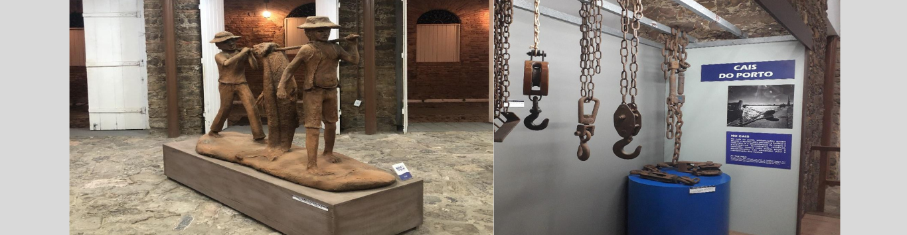
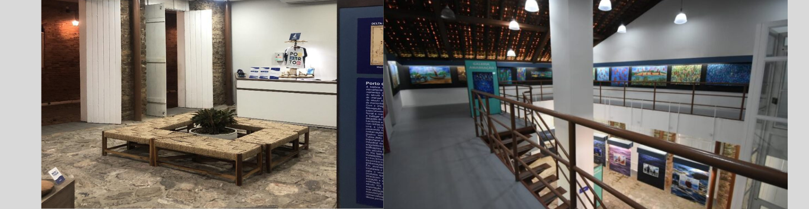
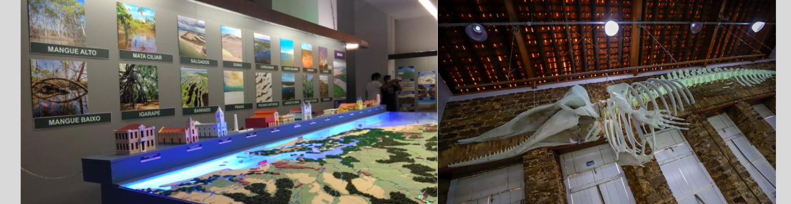

O museu do mar foi inaugurado no dia 2 de julho de 2021,seu projeto foi criado pelo professor e arquiteto Paulo Vasconcelos, e é considerado o maior museu do Piauí, foi criado como parte do projeto de revitalização do complexo turístico do Porto das barcas, e está localizado em Parnaíba, as margens do rio Igaraçu, apresenta ao público pesquisas sobre a cultura e a biodiversidade da região.
Saiba Mais


Previous
Next